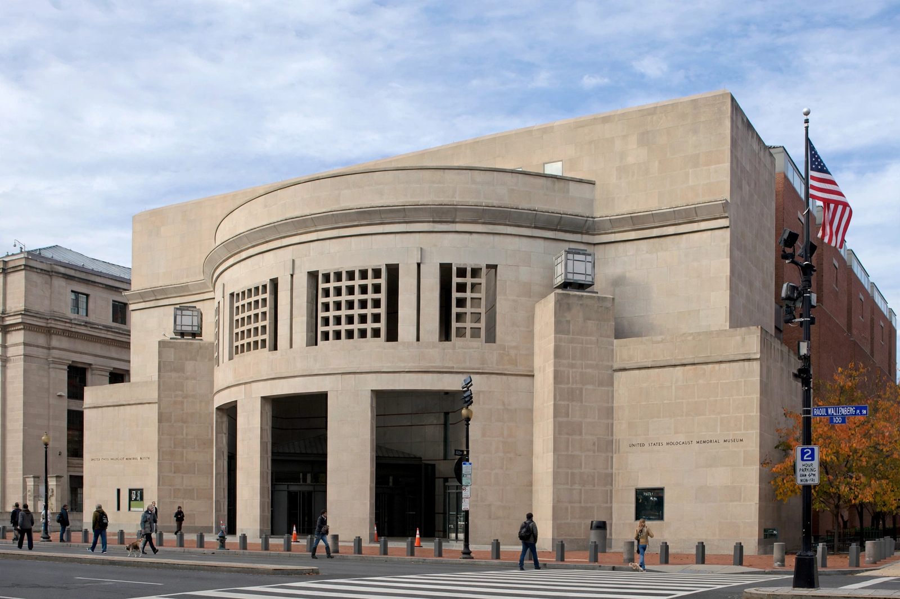

United States Holocaust Memorial Museum
| United States Holocaust Memorial Museum | |
|---|---|
 | |
| Established | Dedicated April 22, 1993 |
| Location | 100 Raoul Wallenberg Place SW, Washington, D.C. |
| Type | National memorial museum |
| Architect | James Ingo Freed (Pei Cobb Freed & Partners) |
The United States Holocaust Memorial Museum (USHMM) is the United States' official national memorial to the victims of the Holocaust. Located adjacent to the National Mall in Washington, D.C., it was unanimously authorized by Congress in 1980 and dedicated in 1993 in a ceremony led by President Bill Clinton and Nobel laureate Elie Wiesel, who had chaired the presidential commission that proposed the museum. Its mission is to advance and disseminate knowledge about the Holocaust, preserve the memory of those who suffered, and encourage reflection on the moral responsibilities of individuals and nations.
Exhibitions
The Permanent Exhibition, "The Holocaust," spans three floors and follows a chronological narrative from the Nazi rise to power in 1933, through the Nuremberg Laws and Kristallnacht, to ghettoization, the mass shootings of the Einsatzgruppen, the camps, liberation, and its aftermath. Visitors receive an identity card bearing the story of a real person who lived during the Holocaust. Artefacts include a German freight car of the type used to deport Jews, barracks bunks from Auschwitz-Birkenau, and thousands of victims' shoes. A separate exhibition, "Remember the Children: Daniel's Story," presents the Holocaust to younger visitors.
Research and education
The museum houses extensive archives and the Jack, Joseph and Morton Mandel Center for Advanced Holocaust Studies, supports scholarly fellowships, trains educators, military officers, and law-enforcement personnel, and works to document and prevent contemporary genocide. It cooperates internationally with Yad Vashem and memorial sites such as Bełżec, where it helped develop the memorial museum.
Visitation
The museum has welcomed tens of millions of visitors, including many heads of state, since opening. It anchors American observances of the Days of Remembrance and marks International Holocaust Remembrance Day each January 27.